UseBanca · estudo de 12 de novembro de 2026
Pesquisa em 28 repositórios de código aberto, com licenças conferidas, tamanhos medidos e uma proposta visual única para o painel, a loja e a plataforma.
Nada foi alterado no site. Nenhum arquivo do UseBanca mudou, nenhuma biblioteca foi instalada e nada foi publicado. Este relatório e as imagens ficam numa branch separada (pesquisa-design-system) esperando a sua decisão.
css/variables.css: mesmas cores e letras, com escala única, tema escuro e cerca de 20 componentes.package.json de cada um. A tabela da seção 4 traz o que está escrito lá hoje.Sete pranchas. Todas usam os mesmos tokens, então o painel, a loja e a plataforma parecem um produto só.
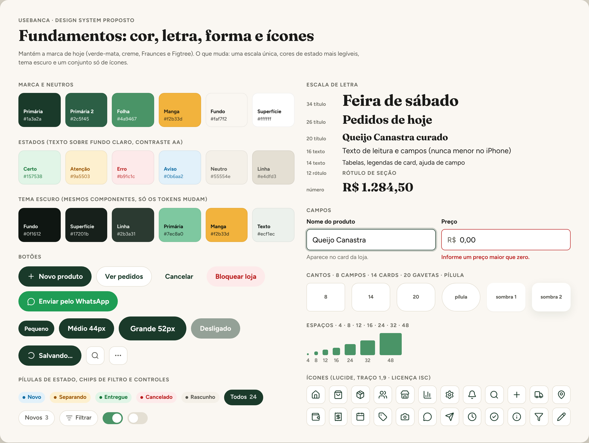
Arraste para o lado para ver inteira →
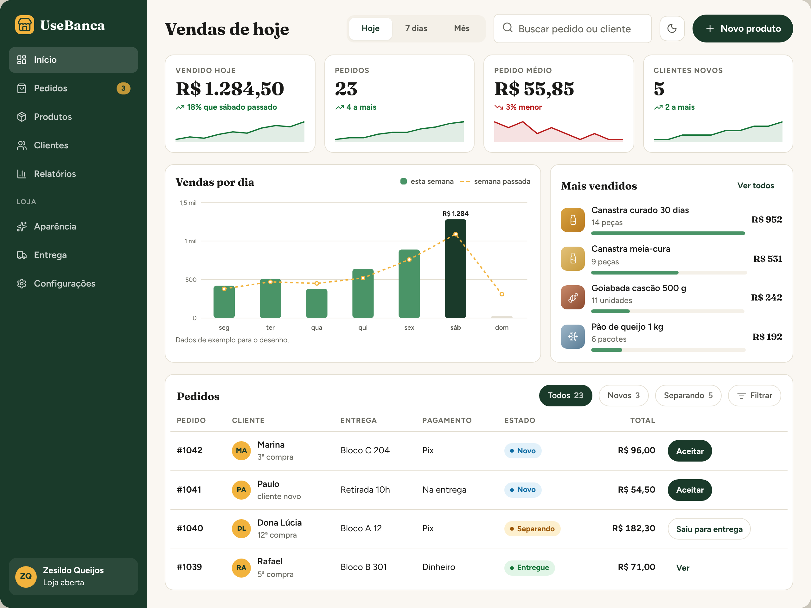
Arraste para o lado para ver inteira →
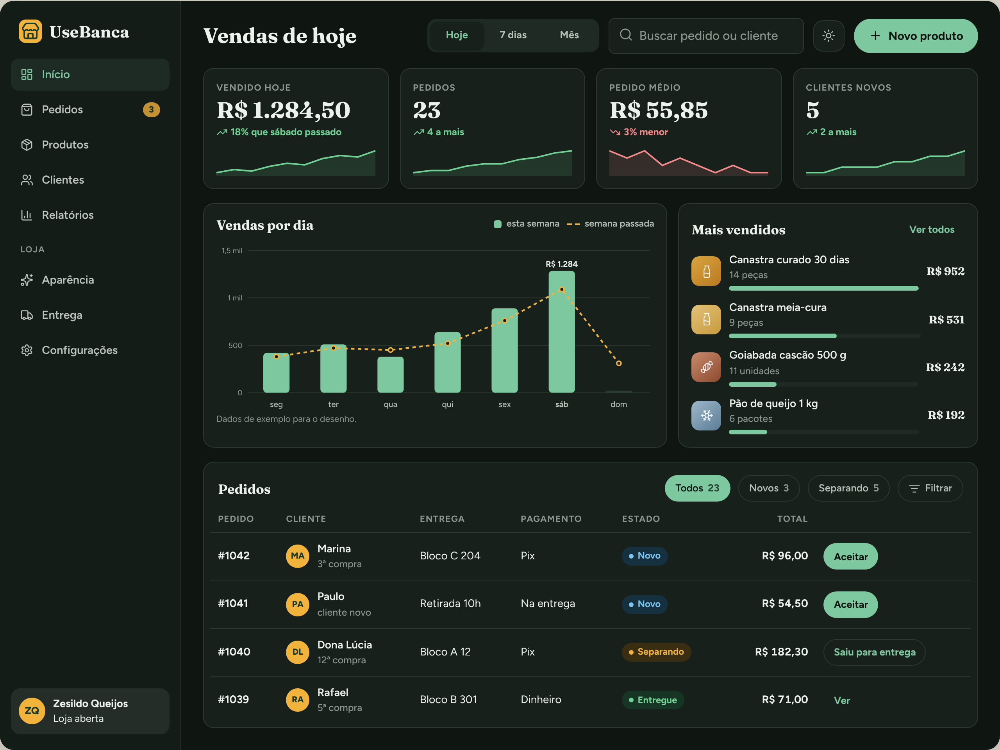
Arraste para o lado para ver inteira →
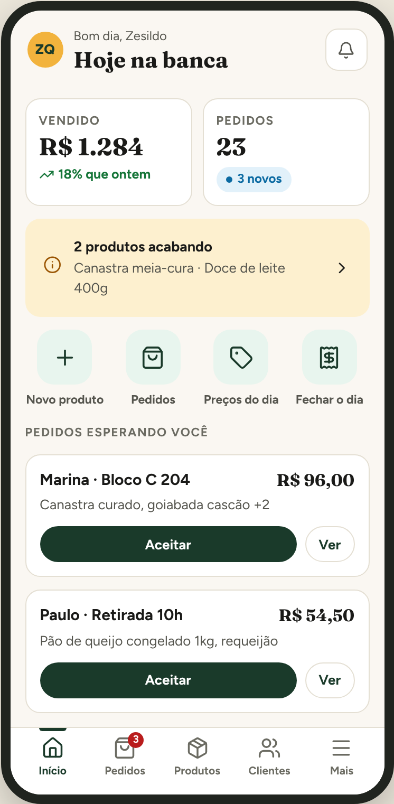
Início: resumo do dia e atalhos grandes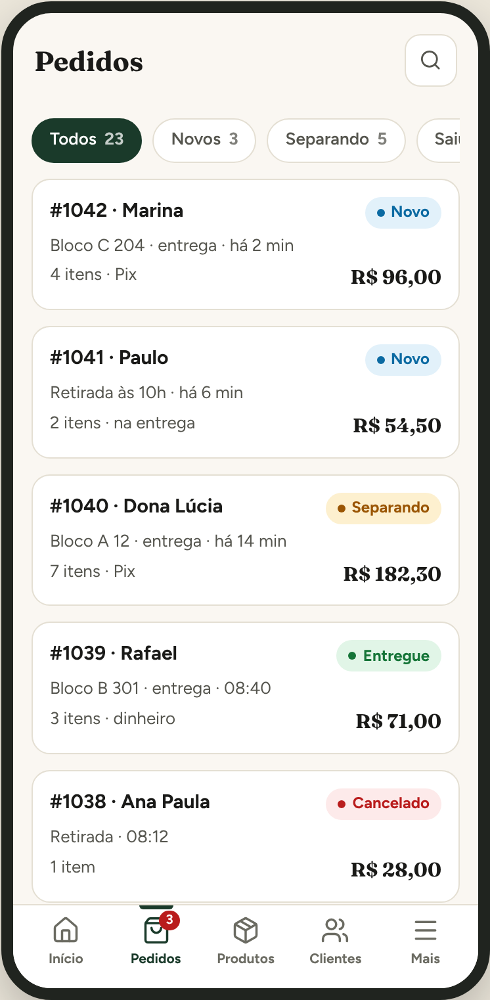
A tabela de pedidos vira lista de cards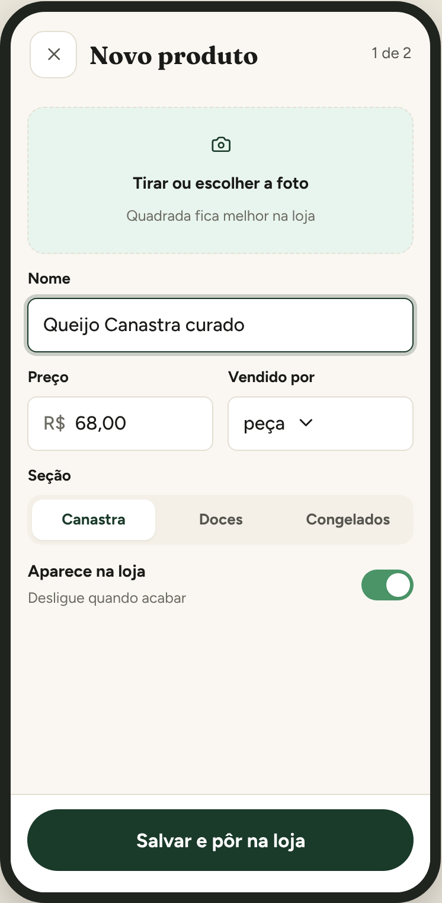
Cadastro rápido: foto, nome, preço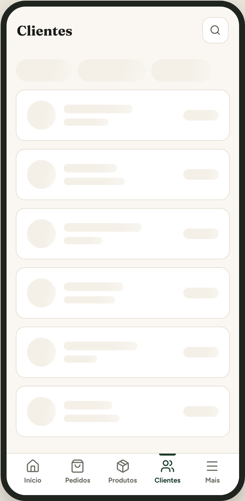
Carregando: o desenho vem antes dos dados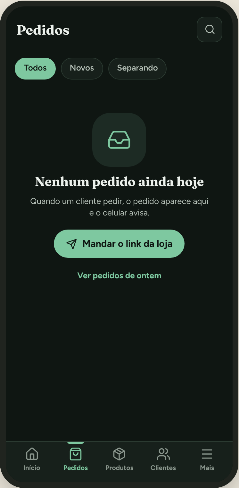
Tela vazia, no tema escuro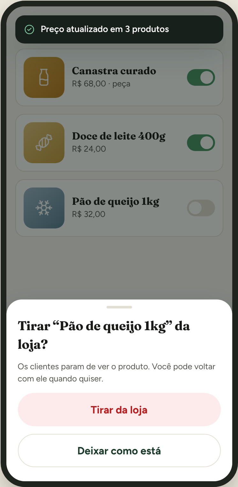
Aviso rápido e confirmação em gaveta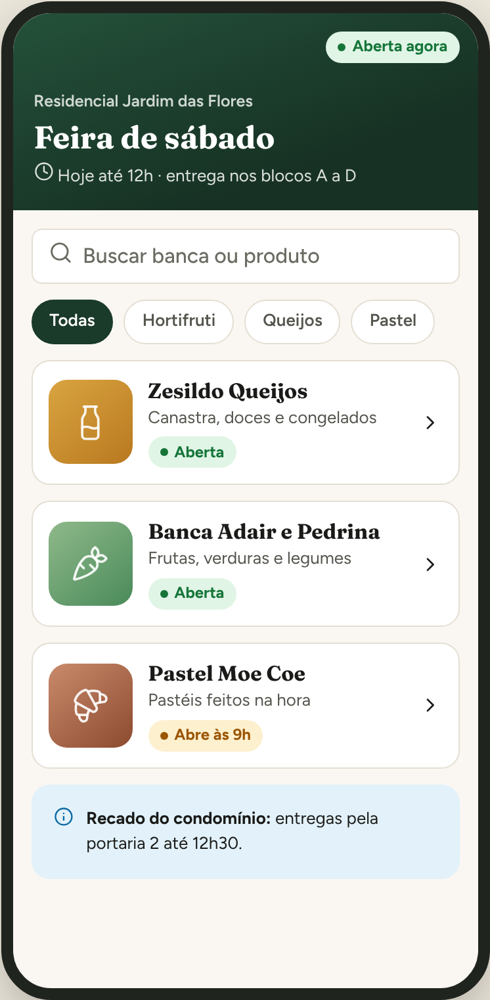
Lobby da feira: um link, todas as bancas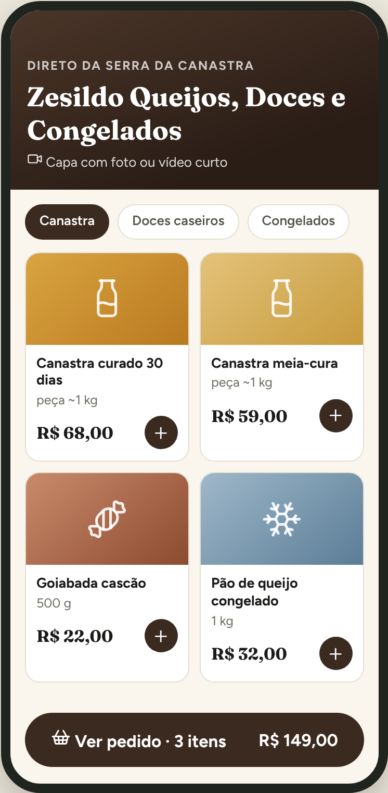
Loja com tema próprio (exemplo do Zesildo)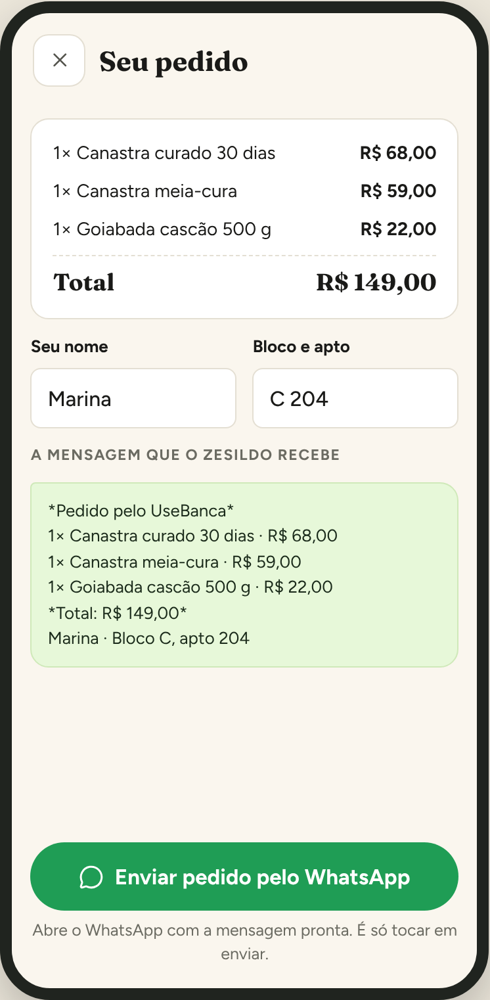
Modo “só cai no WhatsApp”feira.html), mas ele leva direto para uma banca; a lista de bancas só aparece se der erro.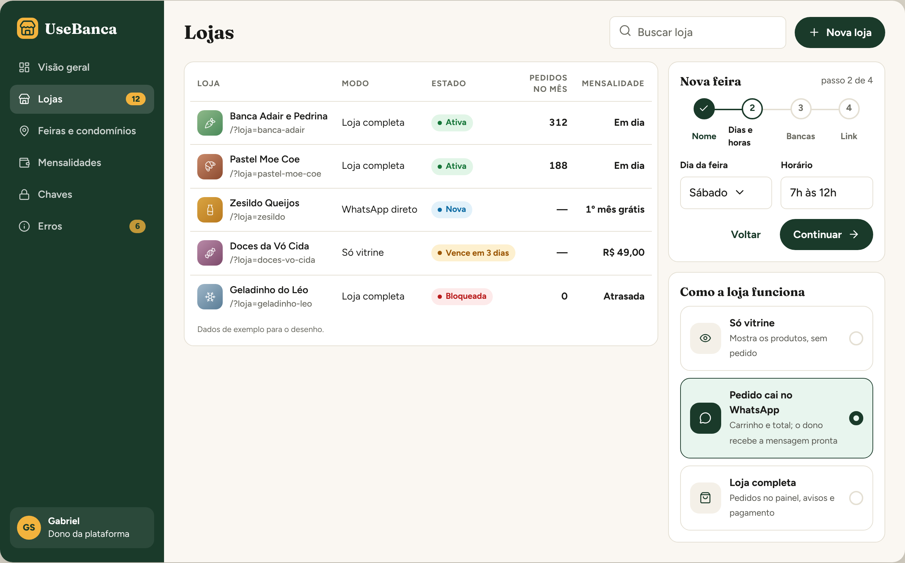
Arraste para o lado para ver inteira →
| Componente | Onde está o melhor exemplo | Uso no UseBanca | Caminho |
|---|---|---|---|
| Tabela que vira cards no celular | Tabler, Carbon | Pedidos, clientes, lojas, mensalidades | adaptar |
| Indicador com minigráfico | Tabler, CoreUI | Início do painel, relatórios | adaptar |
| Menu lateral que recolhe + barra inferior | CoreUI, AdminLTE, Fluent UI | Navegação do painel e da plataforma | adaptar |
| Gaveta de baixo (bottom sheet) | Web Awesome, Flowbite | Confirmações e detalhes no celular | adaptar o projeto já tem gavetas |
| Esqueleto de carregamento | Carbon, daisyUI, Web Awesome | Listas de pedidos, clientes, produtos | adaptar |
| Tela vazia com próximo passo | Carbon, Plane | Loja nova, dia sem pedido, busca sem resultado | adaptar |
| Aviso rápido (toast) | Flowbite, Web Awesome | "Salvo", "Preço atualizado" | adaptar |
| Passo a passo | Flowbite, Cal.com | Primeiros passos da loja, cadastro de feira | adaptar |
| Filtros em chips com contagem | HyperUI, Preline, Plane | Pedidos por estado, clientes por tipo | adaptar |
| Pílula de estado + linha do tempo | Tabler | Estado do pedido, da loja, da mensalidade | adaptar |
| Campo com ajuda e erro no lugar | Carbon, Bootstrap, Cal.com | Todos os formulários | adaptar |
| Controle segmentado e cartão de escolha | daisyUI, Fluent UI | Período do relatório, modo da loja | adaptar |
| Busca geral por teclado | Twenty, Plane, Cal.com | Achar pedido, cliente ou produto no painel | só a ideia código é AGPL |
| Botões e chaves com microinteração | Uiverse | Botão que mostra "salvando", chave liga/desliga | reaproveitar conferindo cada peça |
| Ícones em traço | Lucide, Phosphor | Painel, loja e plataforma | reaproveitar |
A ordem é pelo quanto cada um ajuda o UseBanca, não por qualidade geral. Dos dez, só os cinco primeiros são HTML e CSS; os outros são aplicações em React e servem como modelo de desenho.
O site aceita script só do próprio endereço (script-src 'self' na política de segurança). Então qualquer biblioteca teria de ser copiada para dentro do repositório, sem CDN. Isso pesa a favor de trazer pouco.
| Projeto | Funciona sem framework? | Veredito para o UseBanca |
|---|---|---|
| Lucide | Sim. São arquivos SVG. | usar copiando só os ícones necessários |
| Phosphor Icons | Sim. SVG em seis pesos. | alternativa ao Lucide; escolher um só |
| DOMPurify | Sim. Um arquivo, zero dependências. | usar quando precisar de texto com formatação |
| Chart.js | Sim. Desenha em canvas. | opcional só na aba de relatórios |
| Motion | Sim, tem API para JavaScript puro. | opcional o CSS do projeto já cobre |
| Uiverse | Sim. Trechos de HTML e CSS. | usar peça por peça |
| Web Awesome | Sim. Componentes web nativos. | referência difícil de vestir com o tema próprio |
| Bootstrap, Bulma, CoreUI, AdminLTE, Tabler | Sim, mas trazem o próprio CSS inteiro. | só referência pesam e conflitam |
| Flowbite, daisyUI, HyperUI, Preline | Feitos para Tailwind, que exige etapa de montagem. | só referência |
| Apache ECharts | Sim. | não usar pesado demais para celular |
| Lenis | Sim. | não usar troca a rolagem nativa, risco alto no iPhone |
| FingerprintJS | Sim. | não usar agora ver seção de segurança |
| Carbon, Fluent UI | Em parte (têm componentes web, o foco é React). | só referência |
| Cal.com, Twenty, Appsmith, Plane, AFFiNE | Não. São aplicações em React. | só referência de desenho |
| OWASP ASVS e Cheat Sheets | São documentos. | usar como lista de conferência |
Lido dos arquivos de licença em 12/11/2026. "Atribuição" quer dizer manter o aviso de direitos autorais junto do código copiado.
| Projeto | Licença | Uso comercial | Parte paga | Cuidados |
|---|---|---|---|---|
| OWASP Cheat Sheet Series | CC BY-SA 4.0 | Sim | Não | Se copiar texto, citar a fonte e manter a mesma licença no texto copiado. Consultar não exige nada. |
| OWASP ASVS | CC BY-SA 4.0 | Sim | Não | Igual ao anterior. |
| DOMPurify 3.4 | Apache 2.0 ou MPL 2.0, à escolha | Sim | Não | Manter o aviso de licença. Zero dependências. |
| FingerprintJS 5.3 | MIT | Sim | Sim: a versão precisa (Fingerprint Identification) é fechada e paga | O próprio projeto avisa que a versão livre tem precisão bem menor. |
| Web Awesome 3.14 | MIT | Sim | Existe plano Pro; não conferi o que entra nele | Atribuição. |
| Tabler | MIT | Sim | Não confirmei | Atribuição. Construído sobre Bootstrap. |
| Flowbite 4.0 | MIT | Sim | Sim, Flowbite Pro | Depende de Tailwind e Popper. |
| Uiverse (galaxy) | MIT | Sim | Não | Peças feitas pela comunidade: conferir cada uma antes de copiar. |
| HyperUI | MIT | Sim | Não | Atribuição. Escrito para Tailwind. |
| Preline UI 5.1 | MIT + "Fair Use License" própria | Sim, com condições | Sim, modelos pagos | Atenção: proíbe produto concorrente e exige atribuição com link ao redistribuir. Melhor não copiar código. |
| daisyUI | MIT | Sim | Não no núcleo | Atribuição. Extensão de Tailwind. |
| Bootstrap | MIT | Sim | Não | Atribuição. A branch principal já é a 6 alfa. |
| Bulma 1.0 | MIT | Sim | Não | Atribuição. Só CSS. |
| AdminLTE 4 | MIT | Sim | Não confirmei | Atribuição. Exige Bootstrap. |
| CoreUI 5.9 | MIT | Sim | Sim, CoreUI Pro | Atribuição. Exige Popper. |
| Carbon | Apache 2.0 | Sim | Não | Manter avisos. A marca IBM não pode ser usada. |
| Fluent UI | MIT | Sim | Não | Atribuição. Fontes e marcas da Microsoft ficam fora da licença. |
| Lucide | ISC (parte herdada do Feather em MIT) | Sim | Não | Manter o aviso de licença junto dos ícones copiados. |
| Phosphor Icons 2.1 | MIT | Sim | Não | Atribuição. |
| Chart.js 4.6 | MIT | Sim | Não | Atribuição. Uma dependência pequena. |
| Apache ECharts 6.1 | Apache 2.0 | Sim | Não | Manter LICENSE e NOTICE. |
| Motion | MIT | Sim | Sim, exemplos e extras pagos | Atribuição. |
| Lenis 1.3 | MIT | Sim | Não | Atribuição. |
| Cal.com | MIT | Sim | O produto comercial é separado | O repositório hoje se apresenta como "Cal.diy", sem o código empresarial. |
| Twenty | AGPL 3.0, com arquivos comerciais e alguns pacotes MIT | Com obrigação | Sim | Não copiar código: a AGPL obrigaria a abrir o código do UseBanca. Só olhar o desenho. |
| Appsmith | Apache 2.0 | Sim | Sim, edição empresarial | Manter avisos. |
| Plane | AGPL 3.0 | Com obrigação | Sim | Não copiar código, pelo mesmo motivo do Twenty. |
| AFFiNE | MIT na maior parte; o servidor tem licença própria | Sim, na parte MIT | Edição empresarial anunciada | Conferir a pasta de origem antes de copiar qualquer coisa. |
Isto é uma leitura técnica das licenças, não um parecer jurídico. Para a venda do UseBanca como produto, vale uma conferência com advogado antes de copiar código de terceiros.
css/variables.css: cor, letra, espaço (4, 8, 12, 16, 24, 32, 48), cantos (8, 14, 20, pílula), três sombras e três tempos de animação. Componente nenhum escreve cor direta.#1a3a2a, folha #4a9467, manga #f2b33d, creme #faf7f2. As cores de estado escurecem um pouco para dar leitura em texto pequeno.js/icones.js e js/icones-admin.js); o Lucide tem o mesmo estilo e 2.052 desenhos prontos.transform e opacity, e tudo desliga para quem pede menos movimento.content-visibility em card, largura da foto sempre escrita. Cada componente novo entra na suíte de testes de iPhone.js/icones.js já tem. Cada ícone tem em média 0,4 kB.escapeHTML, que basta enquanto não houver texto com formatação. Se entrar descrição rica ou recado com negrito e link, é a peça certa.Ponto de partida, medido no repositório: todo o CSS do UseBanca soma 109 kB comprimido em 34 arquivos, e o painel carrega 15 deles, 49 kB. O projeto não usa framework de interface, nem biblioteca de gráficos ou de ícones.
| Peça | Tamanho comprimido | Como foi obtido | Leitura |
|---|---|---|---|
| Bulma (CSS) | 63,6 kB | medido | Mais que todo o CSS do painel de hoje |
| Bootstrap 6 alfa (CSS + JS) | 50,4 + 58,4 kB | medido | Dobraria o peso do painel |
| CoreUI (CSS + JS) | 41,8 + 30,6 kB | medido | Idem |
| AdminLTE (CSS + JS) | 41,9 + 7,8 kB | medido | E ainda exige o Bootstrap junto |
| Apache ECharts completo | 359,2 kB | medido | Inviável em celular intermediário |
| Apache ECharts versão simples | 164,9 kB | medido | Ainda pesado |
| Chart.js completo | cerca de 70 kB | publicado, não medido | Aceitável se carregar só nos relatórios |
| DOMPurify | 11,4 kB | medido | Leve |
| Lucide, 40 ícones | cerca de 5 kB | estimado de 0,4 kB por ícone, antes de comprimir 16 kB | Leve |
| Lenis | poucos kB | segundo o próprio projeto | Leve, mas o risco é de comportamento, não de peso |
| Motion | de 2 a 20 kB conforme o uso | publicado, não medido | Dispensável hoje |
| Design system próprio (tokens + 20 componentes) | de 8 a 12 kB | estimativa minha | Substitui regras repetidas; o total tende a cair |
Cada etapa sai numa branch própria, com os testes passando, e só vai para o site quando você aprovar.
Repositórios lidos em 12/11/2026: